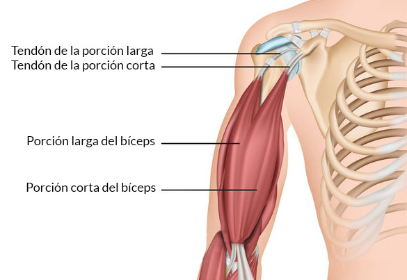
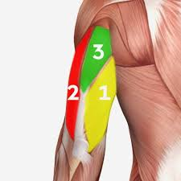
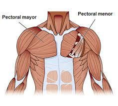
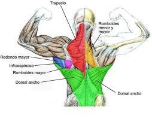
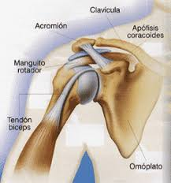
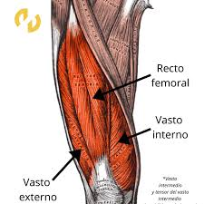

En el camino hacia la construcción de una masa muscular sólida y natural, el entrenamiento con pesas se erige como el pilar fundamental, el estímulo directo que desafía y adapta nuestros músculos. Sin embargo, la verdadera alquimia del crecimiento muscular se forja en la sinergia de factores que a menudo pasan desapercibidos, pero que son intrínsecamente ligados a los procesos biológicos y químicos que orquestan la hipertrofia. Este análisis profundiza en la importancia crucial de la hidratación estratégica, la gestión del estrés y el sueño reparador como complementos indispensables para optimizar tus resultados.
A nivel bioquímico, el músculo es un tejido dinámico donde la síntesis y la degradación de proteínas ocurren constantemente. El agua, lejos de ser un mero acompañante, actúa como el medio esencial para que estas reacciones se lleven a cabo con eficiencia.
Transporte Nutricional Óptimo:
La sangre, con su alto contenido de agua, vehiculiza los aminoácidos, los ladrillos constructores de la proteína muscular, hacia las células trabajadas. Una hidratación deficiente compromete esta entrega, limitando la disponibilidad de sustratos esenciales para la reparación y el crecimiento.
Eliminación Eficaz de Subproductos Metabólicos:
El ejercicio intenso genera metabolitos como el lactato. El agua facilita su transporte fuera de las células musculares para su eventual eliminación renal. La deshidratación obstaculiza este proceso, contribuyendo a la fatiga y ralentizando la recuperación.
Volumen Celular y Señalización Anabólica:
La hidratación adecuada mantiene una presión osmótica intracelular óptima. Se ha observado que las células musculares bien hidratadas exhiben una mayor tasa de síntesis proteica y una menor degradación. Este fenómeno sugiere que el volumen celular actúa como una señal anabólica intrínseca.
Catalizador Enzimático:
Innumerables enzimas involucradas en el metabolismo energético y la síntesis de proteínas requieren un entorno acuoso para su función catalítica. La falta de hidratación puede ralentizar estas vías metabólicas cruciales para el desarrollo muscular.
El estrés crónico desencadena la liberación sostenida de cortisol, una hormona con potentes efectos catabólicos que pueden sabotear tus esfuerzos en el gimnasio.
Proteólisis Inducida por Cortisol:
El cortisol estimula la proteólisis, la degradación de las proteínas musculares para liberar aminoácidos que pueden convertirse en glucosa. Niveles elevados y prolongados de cortisol inclinan la balanza metabólica hacia la pérdida de masa muscular.
Interferencia con la Síntesis Proteica:
El cortisol puede inhibir las vías de señalización anabólicas, incluyendo la crucial vía mTOR, esencial para la hipertrofia muscular en respuesta al entrenamiento de resistencia.
Supresión de Hormonas Anabólicas:
El estrés crónico puede impactar negativamente la producción de hormonas anabólicas clave como la testosterona y la hormona de crecimiento (GH), fundamentales para el desarrollo muscular y la recuperación.
Inflamación Sistémica de Bajo Grado:
El estrés prolongado puede contribuir a un estado inflamatorio crónico de bajo grado, un factor que también puede interferir con la reparación muscular y el crecimiento a largo plazo.
Las aproximadamente ocho horas de sueño diario no son un lujo, sino una necesidad biológica para optimizar la recuperación y el crecimiento muscular.
Pico de Liberación de Hormona de Crecimiento (GH):
La fase profunda del sueño es el momento principal para la secreción de GH, una hormona anabólica que estimula la síntesis proteica, promueve la lipólisis y facilita la reparación de los tejidos musculares dañados durante el entrenamiento. La privación del sueño atenúa significativamente esta liberación hormonal.
Ventana para la Síntesis Proteica Nocturna:
Evidencia emergente sugiere que la síntesis de proteínas musculares puede intensificarse durante el sueño, especialmente en un contexto post-entrenamiento adecuado. Un sueño de calidad proporciona el tiempo y el ambiente hormonal propicio para este proceso anabólico.
Reparación y Regeneración Muscular Activa:
Durante el sueño, el cuerpo se dedica a reparar las microlesiones fibrilares inducidas por el ejercicio. Este proceso de reparación es fundamental para la adaptación y el crecimiento muscular. Un sueño insuficiente interrumpe esta crucial fase de regeneración.
Regulación Hormonal Sistémica:
El sueño adecuado contribuye a la regulación de otras hormonas metabólicamente relevantes para el músculo, como la insulina y el cortisol. La falta de sueño puede inducir resistencia a la insulina y mantener niveles elevados de cortisol, ambos factores perjudiciales para la ganancia muscular a largo plazo.